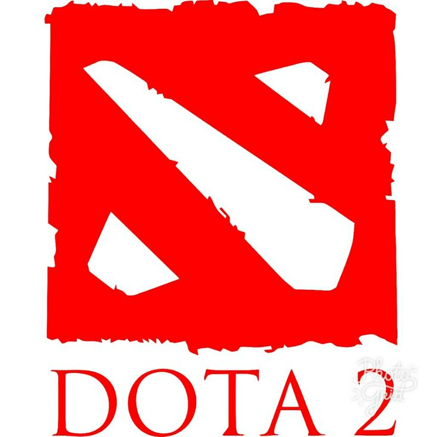

Добро пожаловать на сайт о Dota 2!
Здесь вы найдете информацию об игре, её описание и отзывы игроков.
Dota 2 — это популярная многопользовательская онлайн-игра в жанре MOBA (Multiplayer Online Battle Arena), разработанная и изданная компанией Valve.
Содержание
Геймплей
Каждая карта схлёстывает две группы противников, которые борются до последнего выжившего, либо пока не потеряют все сооружения, которые должны защищать. Игроку предоставляется контроль над одним героем – чемпионом. Кем играть, пользователь должен выбрать заранее, и здесь нет никакого рандома. Состав команды может быть подобран случайно с учётом уровня героя и ранга игрока, а также отряд можно собирать вручную (играть вместе с друзьями). Битвы приносят золото. Игровую валюту можно получить за охрану зданий (небольшое количество, если находиться рядом с ним), убийство мобов или противников, а также за командную победу на карте. Уровень игрока напрямую зависит от уровня его чемпионов и от количества побед. Чем больше у него прокачанных героев, и чем чаще они выигрывают – тем быстрее удается подняться на верхушку рейтинга. В игре есть внутренний магазин, в котором продаются косметические предметы для героев и другие мелочи. Есть ограниченное количество игровых предметов, которые могут дать пользователю преимущество на карте, и которые продаются за реальные деньги. Но даже они не вносят в сражения дисбаланс, потому что добавляют лишь минимальные улучшения.
Герои
В Dota 2 больше внимание уделяется игровым персонажам: их дизайну и прокачке. Внешний вид героев внушительный и эпичный. Общая стилистика вдохновлена миром Варкрафта, но уже не так явно его пародирует. Образы чемпионов яркие и запоминающиеся, выход и сражения каждого сопровождаются личными уникальными звуковыми эффектами. Среди других фишек стоит отметить следующие: Оригинальных героев в игре – более 100. Разработчики постоянно добавляют новых персонажей, поэтому скучать не придётся. У героев есть всего три класса: ловкий, сильный и магически одарённый. Их разделение по конкретным умениям зависит от выбора игрока. Это позволяет создавать более вариативные билды. Опыт накапливается за убийство мобов, вражеских игроков, разрушение зданий. Игровые очки получит не только тот, кто нанёс последний удар, но и все находящиеся рядом пользователи. Это помогает не гоняться за фрагами и уделить больше внимания игровому процессу.
Плюсы и минусы игры в Dota 2
| Плюсы | Минусы |
|---|---|
| Глубокая стратегическая составляющая | Высокий порог входа для новичков |
| Разнообразие героев и способностей | Долгие матчи |
| Активное сообщество | Токсичное сообщество |
| Регулярные обновления и балансировка | Сложные механики для новичков |